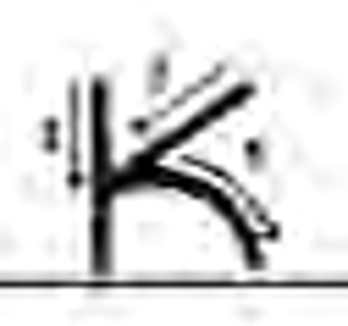
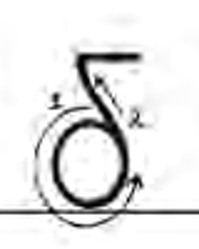

Προηγούμενη δοκιμή r1
Πρόταση r9
Σχολικό Τετράδιο Γλώσσας Α΄ Δημοτικού, έντυπη σ.26: επάνω σκέλος προς την κάθετη, κάτω σκέλος από την κάθετη προς τα δεξιά.

Η σειρά συγκρίθηκε με το σχολικό υπόδειγμα, έντυπη σ.60. Η ένωση σε μία συνεχή διαδρομή είναι απλοποίηση της εφαρμογής προς έγκρισή σου.

Μεγεθυμένο απόσπασμα από το Τετράδιο Γλώσσας Α΄ Δημοτικού, έντυπη σ.44. Η δεξιά μορφή ακολουθεί τις αναλογίες του υποδείγματος. Η επίδειξη φοράς είναι χωριστή τοπική πρόταση προς έγκριση.
Τα κυκλάκια συνδέονται με τις μικρές τελείες της πραγματικής αφετηρίας. Η επίδειξη είναι αργή για να ελέγξεις κάθε κίνηση. Στη σύγκριση εκδόσεων, οι δύο πλευρές χρησιμοποιούν τον ίδιο τρόπο απεικόνισης.